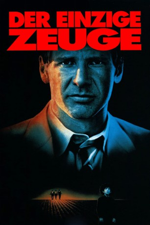

#8669 Der Einzige Zeuge
Alternativ: Witness
Auszeichnungen: 2 Oscars gewonnen für 6 Oscars nominiert 1 BAFTA-Awards gewonnen
 
 IMDB-Wertung: 7.4 / 10
IMDB-Wertung: 7.4 / 10  Metascore: 0
Metascore: 0 
Inspector John Book soll einen Mord an einem Kollegen aufklären, den ein zehnjähriger Amish- Junge als einziger Zeuge beobachtet hat. Als er merkt, daß er mit dem Fall in ein Wespennest sticht, taucht Book in der ländlichen Sicherheit der Amish-People unter. Diese Nachfahren einer altdeutschen Reformsekte führen ein Leben mit den Mitteln des 16. Jahrhunderts, was für den überzeugten Großstädter Book eine Menge neuer Erfahrungen bedeutet. Auf die Bösewichte braucht er trotzdem nicht lange zu warten.
Jahr: 1985
Dauer: 112 Minuten
FSK: 12
Land: USA Studio: Paramount PicturesTonspuren: DD2.0 - ,
Untertitel:
Auflösung: 1080p (1920x1080) Größe: 7833 MB
Genre: Thriller, Drama, Krimi, Liebe
Regisseur:  Peter Weir
Peter Weir
Drehbuch: William Kelley
Soundtrack: Maurice Jarre
Darsteller:
 Harrison Ford als John Book
Harrison Ford als John Book Kelly McGillis als Rachel
Kelly McGillis als Rachel Josef Sommer als Schaeffer
Josef Sommer als Schaeffer Lukas Haas als Samuel
Lukas Haas als Samuel- Jan Rubes als Eli Lapp
- Alexander Godunov als Daniel Hochleitner
 Danny Glover als McFee
Danny Glover als McFee Brent Jennings als Carter
Brent Jennings als Carter Patti LuPone als Elaine
Patti LuPone als Elaine Angus MacInnes als Fergie
Angus MacInnes als Fergie Viggo Mortensen als Moses Hochleitner
Viggo Mortensen als Moses Hochleitner Timothy Carhart als Zenovich
Timothy Carhart als Zenovich Sylvia Kauders als Tourist Lady
Sylvia Kauders als Tourist Lady- Richard Chaves als Detective
- Robert Earl Jones als Custodian
- Cara Giallanza als Hoodlum
- Bernie Styles als Counterman
- Jennifer Mancuso als Little Girl
- Frederick Rolf als Stoltzfus
- John Garson als Bishop Tchantz
- Beverly May als Mrs. Yoder
 Ed Crowley als Sheriff
Ed Crowley als Sheriff- Marian Swan als Mrs. Schaeffer
- Maria Bradley als Schaeffer's Daughter
- Rozwill Young als T-Bone
- Paul S. Nuss als Amish
- Emily Mary Haas als Amish
- Fred Steinharter als Amish
- John D. King als Amish
- Paul Goss als Amish
- Annemarie Vallerio als Amish
- Bruce E. Camburn als Amish
- William Francis als Town Man
- Tom Kennedy als Ticket Seller
- Ardyth Kaiser als Couple in Garage
- Thomas Quinn als Couple in Garage
- Eugene Dooley als Detective
- Victoria Scott D'Angelo als Detective
- Tim Moyer als Detective
- Nino Del Buono als Detective
- James Frank Clark als Detective
- Joseph Kelly als Detective
- Norman Carter als Detective
- Craig Clement als Detective
- Michael Levering als Hoodlum
- Anthony Dean Rubes als Hoodlum
- Blossom Terry als Mother in Station
- Nancy Kirk als Crying Amish Woman at Funeral (uncredited)
- LaVerne Shank als Young Amish Man (uncredited)
Datei: X:\1985\Einzige Zeuge, Der (1985, FSK12, 1920x1080).mkv seit 20.04.2018
Festplatte: HD 1980-1986
 Es gibt insgesamt 43 Filme in der Gruppe '1985'
Es gibt insgesamt 43 Filme in der Gruppe '1985'